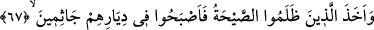
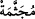

bahsetmiştir. İşte şimdi de şöyle buyurarak düşmanlarını da helak ettiğini bildiriyor:
67. Zulmedenleri de o korkunç ses yakaladı ve yurtlarında diz üstü çökekaldılar.
Kendilerine “zulmedenleri de” Cebrail’in “korkunç ses”i “yakaladı.”
Onlar hakkında A‘râf suresinde ise “ve onları zelzele yakaladı” (el-A‘râf, 7/78)
buyrulmuştur. Bu zelzele, herhalde hava dalgalanmasından sonraki korkunç sesin
peşinden meydana gelmiştir.
Kâşifî der ki: “Zâdü’l-mesîr’de rivâyet edilir ki hayatta olacakları va‘dedilen o üç
günde evlerinde oturdular, kabirler kazdılar, azabı beklediler. Dördüncü gün olup güneş
doğdu ve azab gelmedi. Evlerinden dışarı çıktılar ve birbirlerine seslendiler. Ansızın
Cebrâil (a.s.) aslî sûretinde, ayağı yerde başı semâda, doğudan batıya kadar kanatlarını
açmış olarak, ayakları sarı, kanatları yeşil, dişleri beyaz ve berrak, alnı cilâlı ve nûrânî,
yanağı kızarmış, saçları mercan renginde kırmızı, ufku kaplamış vaziyette zâhir oldu.
Semud kavmi bu durumu gördüler, evlerine doğru yüzlerini çevirdiler ve kabirlerine
geldiler. Cebrâil (a.s.): “Allah’ın lâneti üzerinize olsun, ölün.” diye bağırdı. Hepsi
birden öldüler. Zelzele evlerini yerle bir etti.”
“ve yurtlarında” yani beldelerinde veya evlerinde “diz üstü çökekaldılar” dona
kaldılar, öldüler. Maksad, başlarına azabın ilk geldiği sırada tıpkı normal ölümde
olduğu gibi hareketsiz ve debelenmeden öylece kalakaldıklarını bildirmektir. Bu
ifâdenin onların ne kadar şiddetli ve hızlı bir şekilde azaba yakalandıklarına delâlet
ettiği ise ortadadır. Allah’ım, azabının gelivermesinden sana sığınırız.
Çöküp kalmaları, yüzüstü düşmeleri demektir. Çöküp kalmak, hareketsiz kalmak
demek de olabilir. Kuş, yuvasında gecelediği zamanda bu kökten fiil kullanılır. Yine
Araplar bu fiili, öldüğü için hareket edemeyen şeyler için de kullanırlar. Bahru’l-
ulûm’da şöyle denilir: “İnsanlar çöküp kaldı” dendiği zaman bir kelime bile
konuşmadan hareketsizce oturup kaldılar mânâsına gelir. Şeriatın yasakladığı ‘
’ de
bu fiilden gelmektedir. Mücesseme, taşlanmak için bağlanıp ayakları bir araya getirilen
hayvana denir.
Mesnevî’de şöyle denilir:
Hakk’ın kahrının memuru, onlardan istedi
Bir devenin kan pahası olarak bütün bir şehri.
Hepsi de ümitsiz bir hale gelince
Kuşlar gibi ayaklarını altlarına alıp dizlerinin üstüne çöktüler
Cibrîl-i Emîn, Peygamber’e Kur’an’da anlattı
Bu diz çökmeyi “câsimîn” âyetini getirerek.